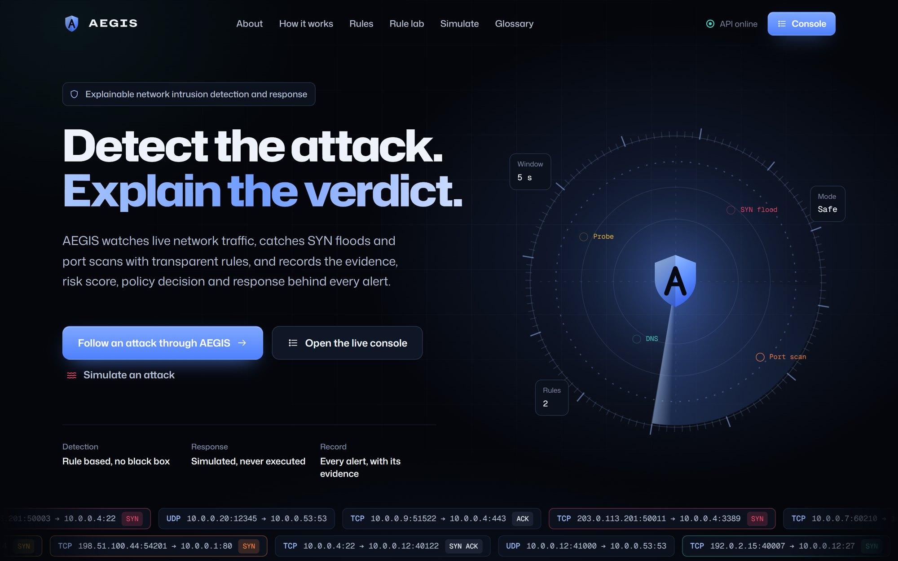
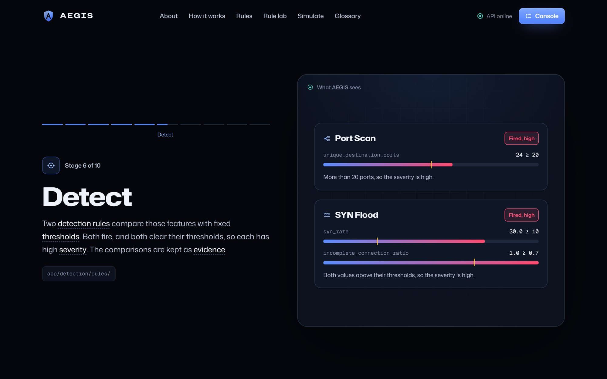
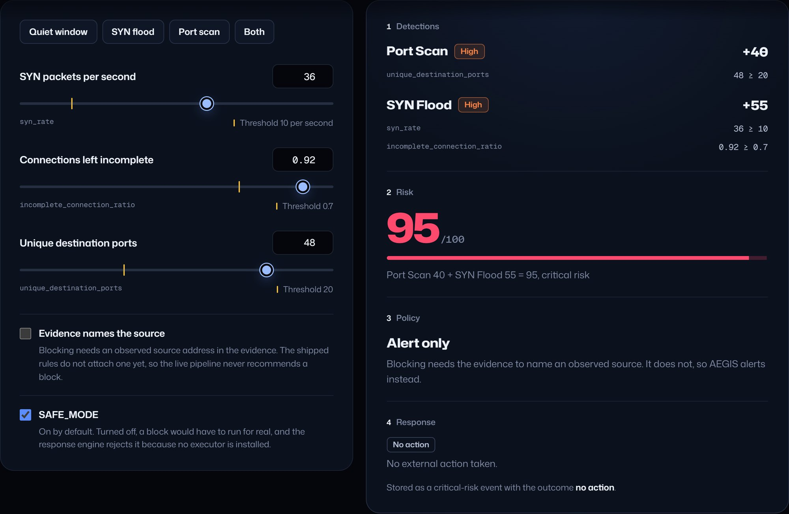
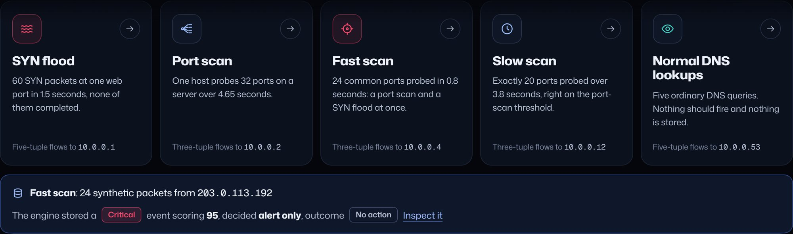
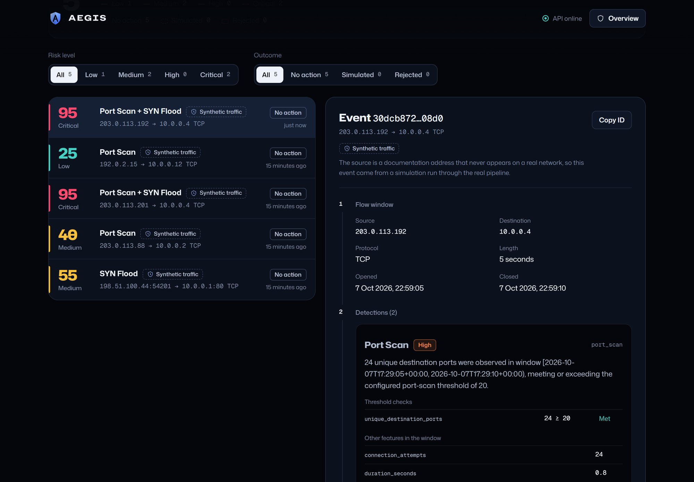

A system that detects SYN floods and port scans with transparent rules, and records the evidence, risk score, decision and response behind every alert.
Project report
| Submitted by | [Student names] |
| Register numbers | [Register numbers] |
| Department | [Department] |
| Institution | [College or university] |
| Project guide | [Guide name and designation] |
| Academic year | [Year] |
| Source code | github.com/RR-1902/aegis |
AEGIS is a network intrusion detection and response system built so that every alert can be checked by a person. It captures packets, groups them into flows measured over five-second windows, and tests each window against two explicit rules: one for SYN floods and one for port scans.
Each rule that fires adds fixed points to a risk score from 0 to 100. A conservative policy engine turns the resulting risk level into a recommended action, and a simulation-only response engine validates it without ever touching the host or its firewall. The whole chain is stored as one immutable security event, identified by a SHA-256 hash of what was observed, and served through a REST API.
A web interface explains the system step by step. It follows one real attack through all ten stages, lets the reader try the rules, runs attack simulations through the real pipeline, and shows the full decision chain of every stored event.
Most detectors report a verdict without its reasons. AEGIS is built to report both.
Intrusion detection systems watch network traffic and raise alerts. Many modern systems rely on statistical or machine-learning models whose outputs are hard to explain: an analyst sees a score, not the measurement behind it. For teaching, auditing and incident review, a reviewer needs to know which value crossed which limit and what the system did next.
The name comes from Greek myth, where the aegis was the shield of Zeus and Athena. To act under someone's aegis is to act under their protection.
Packets pass through ten small stages. Each stage has one job, and each records why it did what it did.
The detection runtime and the API run as separate processes and share only the SQLite file, so nothing on the web side can change what the engine recorded. The one write the API offers, an attack simulation, still passes through the full pipeline.
Each alert is stored once as a security event: the flow, the window, every detection with its evidence, the risk score, the policy decision and the response. Its ID is security-event: followed by the SHA-256 hash of the flow key and window, so the same traffic always produces the same ID. An identical event saved twice is ignored, and a different event under an existing ID is refused.
Two rules, fixed points and a conservative policy. Every value below is configuration, not learned.
| Rule | Fires when, in one window | Medium severity | High severity |
|---|---|---|---|
| SYN Flood | syn_rate ≥ 10 per second and incomplete_connection_ratio ≥ 0.7 | A value sits exactly on its threshold: +35 | Both values above: +55 |
| Port Scan | unique_destination_ports ≥ 20 | Exactly 20 ports: +25 | More than 20: +40 |
Each detection keeps its evidence: the feature values used, the thresholds applied and every comparison with its result, plus a one-sentence explanation.
| Risk level | Score | Policy decision | Response |
|---|---|---|---|
| Low | 0–29 | Log only | No action |
| Medium | 30–59 | Alert only | No action |
| High | 60–79 | Block the source, only if the evidence names an observed source; otherwise alert only | Simulated while SAFE_MODE is on; rejected if it is off, because no executor exists |
| Critical | 80–100 |
Points from every rule that fired on the same window are added and capped at 100. The policy never infers an attacker from a flow key, because a flow key can be spoofed. The response engine runs six validation checks before it records any outcome, and no code path runs a system or firewall command.
| Layer | Technology | Role |
|---|---|---|
| Engine | Python 3.11, Scapy 2.6, Pydantic Settings | Capture, parsing, flows, features, rules, scoring, policy, response |
| Storage and API | SQLite, FastAPI | Immutable event ledger; /health, /events, /simulations |
| Simulation | In-memory Scapy packets | Five attack scenarios run through the real pipeline; nothing sent on a network |
| Web interface | React 18, TypeScript, Vite, GSAP, Lenis | Narrative overview, rule lab, simulations, event console |
| Testing | pytest, Vitest, Playwright | Unit, integration, end-to-end and browser checks |
The interface explains AEGIS step by step and shows only real data: every score on screen comes from the API or from the engine's own rules.





The interface is keyboard accessible, keeps filters and the selected event in the URL, and switches off all motion for readers who prefer reduced motion. Only transform and opacity animate.
307 of 310 automated tests pass. The three failures are one known configuration mismatch, explained below.
| Suite | Tests | Result |
|---|---|---|
| Backend (pytest, 12 files): parser, flows, features, rules, scoring, policy, response safety, events, pipeline, API, simulations, end-to-end validation | 280 | 277 passed, 3 failed |
| Web interface (Vitest, 3 files): rule engine against Python's numbers, API client, pages | 30 | 30 passed |
The three failing tests expect the API to allow only local origins, while the API allows any origin so that the hosted interface can reach it. Reconciling the two is listed as future work.
| Scenario | Traffic | Rules fired | Score | Level | Decision |
|---|---|---|---|---|---|
| Slow scan | 20 ports in 3.8 s | Port Scan, medium | 25 | Low | Log only |
| Port scan | 32 ports in 4.65 s | Port Scan, high | 40 | Medium | Alert only |
| SYN flood | 60 SYN packets in 1.5 s | SYN Flood, high | 55 | Medium | Alert only |
| Fast scan | 24 ports in 0.8 s | Port Scan and SYN Flood, both high | 95 | Critical | Alert only |
| Normal DNS | 5 queries | None | – | – | Not stored |
Every scenario produced the expected verdict, and benign traffic produced none. The critical fast scan is not blocked, because no rule yet records an observed source; the policy correctly refuses to guess.
Measured on the production build with the CPU slowed fourfold: scrolling the whole overview gives a median frame time of 16.7 ms (60 frames per second), a 95th percentile of 50 ms, and 3 of 819 frames over 100 ms.
| Task | Command |
|---|---|
| Install and test the backend | pip install -r requirements.txt, then python -m pytest tests/ |
| Seed demo events from the real engine | python -m scripts.seed_demo_attacks |
| Start the API | uvicorn app.api.main:app --port 8000 |
| Start the web interface | cd dashboard, npm install, npm run dev |
| Capture live traffic (admin rights, Npcap or libpcap) | python -m app.main |
AEGIS shows that intrusion detection can be transparent without being trivial. Every alert it raises carries the measurements, thresholds and decisions behind it, and the same traffic always produces the same verifiable record. The response layer is safe by design, and the web interface makes each step understandable to someone new to the field.
Its limits are documented and measurable, which makes the next steps clear: wider attack coverage, faster alerts, and a carefully guarded path from simulated to real response.